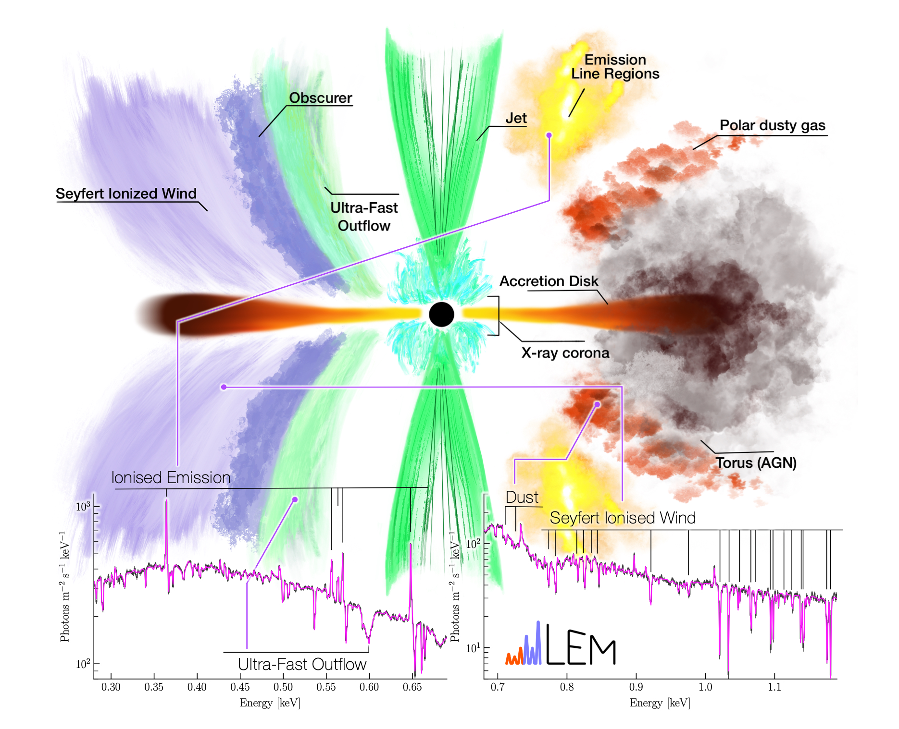

Supermassive black holes reside at the centers of almost every massive galaxy, including the dominant galaxies in groups and clusters. Observations show that these systems form far fewer stars than would be expected if their gas were allowed to cool freely. Black holes may be behind this suppression.
Although black holes are mostly known for their strong gravitational pull and the accretion of nearby matter, these cosmic engines also pump energy out into their surroundings. Gas can be expelled via powerful winds, reaching velocities of tens of thousands of kilometers per second. These winds carry energy and momentum into their host galaxies, potentially influencing the galaxy’s evolution. Our group studies these winds via the features they imprint on X-ray spectra, measuring their velocities, densities, and ionization states.
In a different mode of “feedback” most often found in massive halos (such as galaxy groups and clusters), black holes power relativistic jets that are responsible for inflating bubbles of radio-emitting plasma. This process also creates weak shocks and drives turbulence in the surrounding gas. Our group studies AGN feedback both with imaging and spectroscopic analyses.
Selected relevant publications:
XRISM Collaboration, core. authors: Zhang C., Heinrich A., Zhuravleva I., Bellomi E. Disentangling multiple gas kinematic drivers in the Perseus galaxy cluster. Nature, 650, 309 (2026).
Rogantini D., Kara E., Gallo L. C., et al. Variability of the X-Ray-obscuring Wind in Mrk 335 with the XMM-Newton Reflection Grating Spectrometer. ApJ, 1008, 33 (2026).
McCall H., Zhuravleva I., Churazov E., et al. Decoding AGN Feedback with X-arithmetic: From Morphology to Physical Mechanisms. ApJ, 989, 159 (2025).
Image credit: D. Rogantini; arXiv:2406.18743
